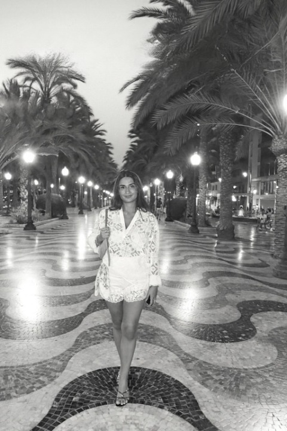

Loresa - Wer bin ich?
Ich bin Loresa, 24, aus Dietikon. Digitale Ideen, die das Leben smarter machen, faszinieren mich.
Ich mag alles, was Organisation, Struktur und ein bisschen Chaos verbindet, und probiere gerne neue Tools aus, um Dinge einfacher zu machen. Gerade finde ich meinen Weg in der IT- und Digitalisierungswelt. Es macht mir Spass, mich weiterzuentwickeln, neue Perspektiven zu entdecken und herauszufinden, was wirklich zu mir passt.
Ich würde mich als offen, neugierig und ziemlich „we got this“ beschreiben - mit Humor und der Überzeugung, dass man mit Neugier fast alles lernen kann.
